Questa interfaccia non è uscita da un template. È nata da una conversazione: reference trovate su Pinterest, bozze disegnate a mano, foto, correzioni continue. Qui sotto ci sono, in ordine, le richieste che hanno portato al risultato.
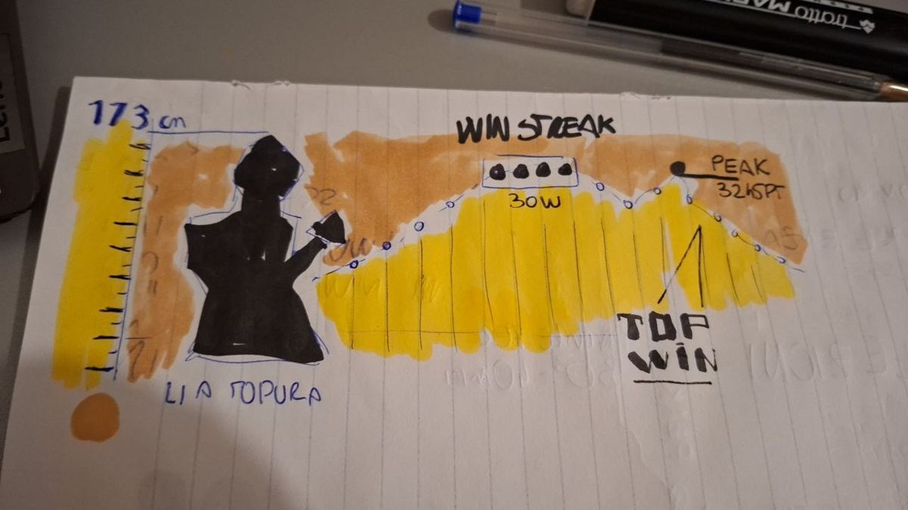
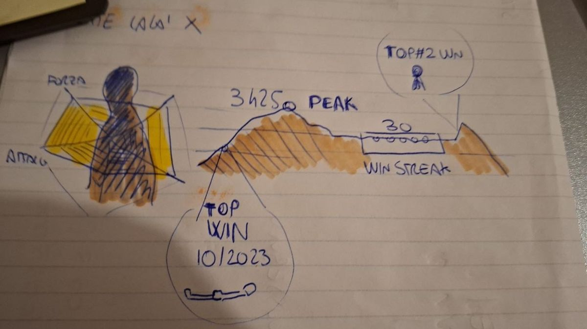
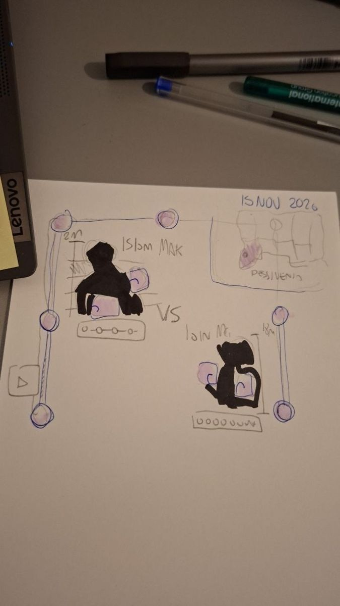
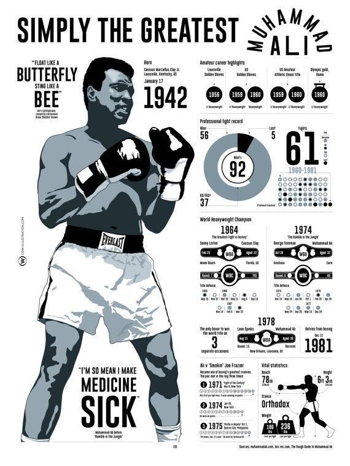
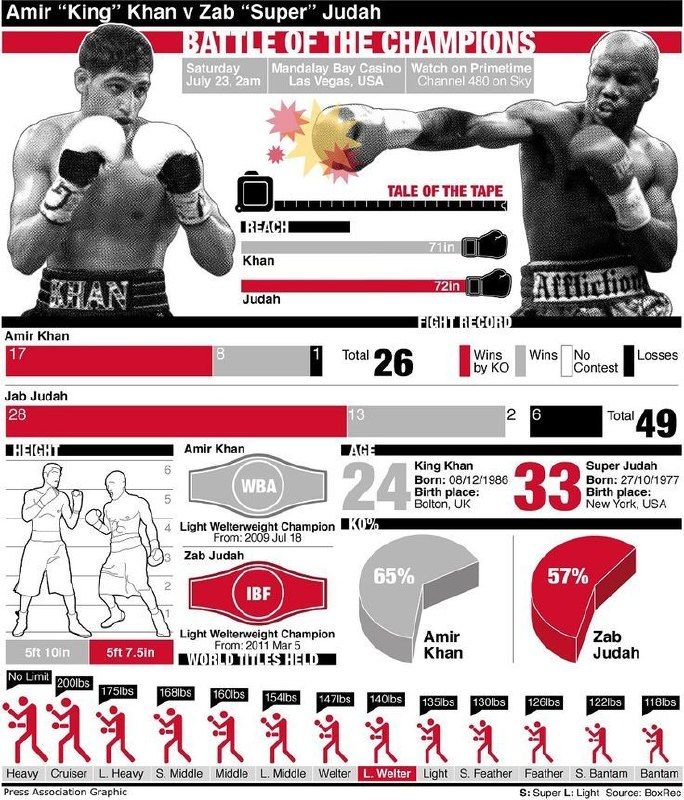
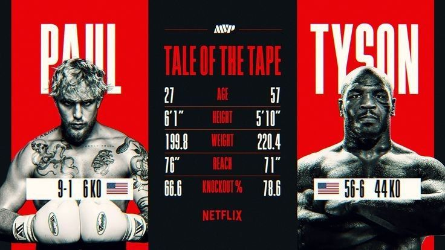
Dobbiamo fare l'interfaccia miglioredel sito del mio amico, attenzione che il database è pesante.
conceptattorno all'idea che nel sito ci sono le statistiche e
posso far combattere, non vibecoding.
formedi dimensione e colore diversi che, quando combattono, sembrano nature diverse che si scontrano.
Harrionomane, stats pessime, altezza bassa, italiano.
verdettocon un po' di caso.
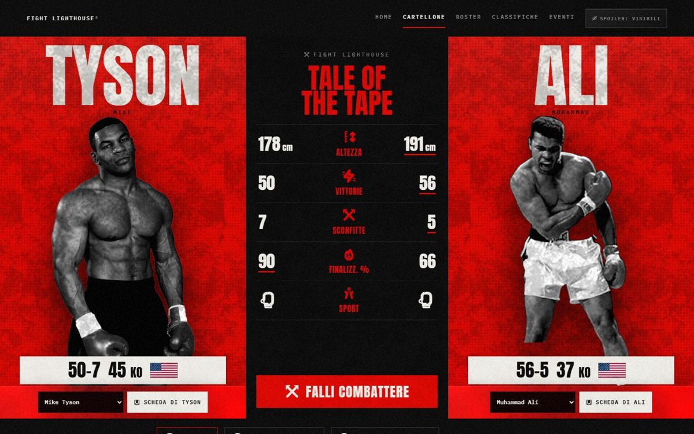
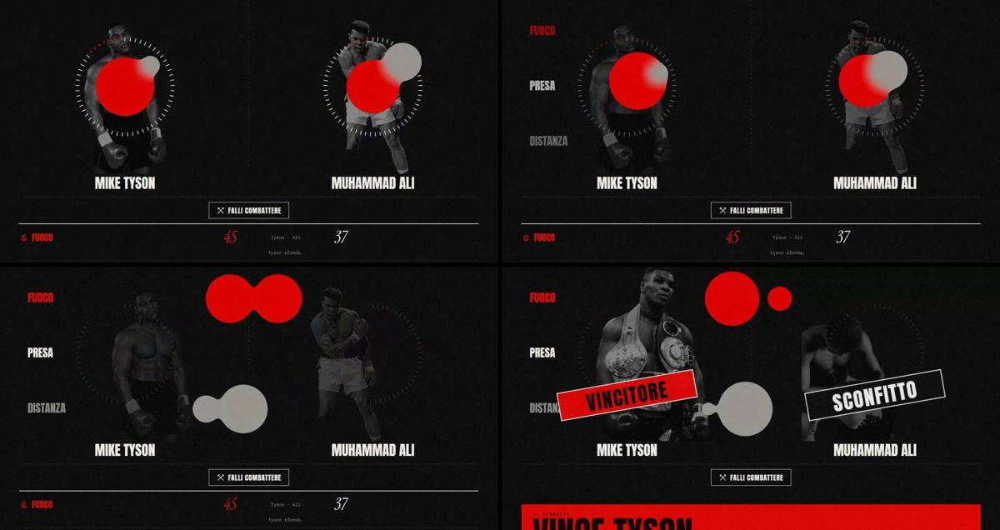
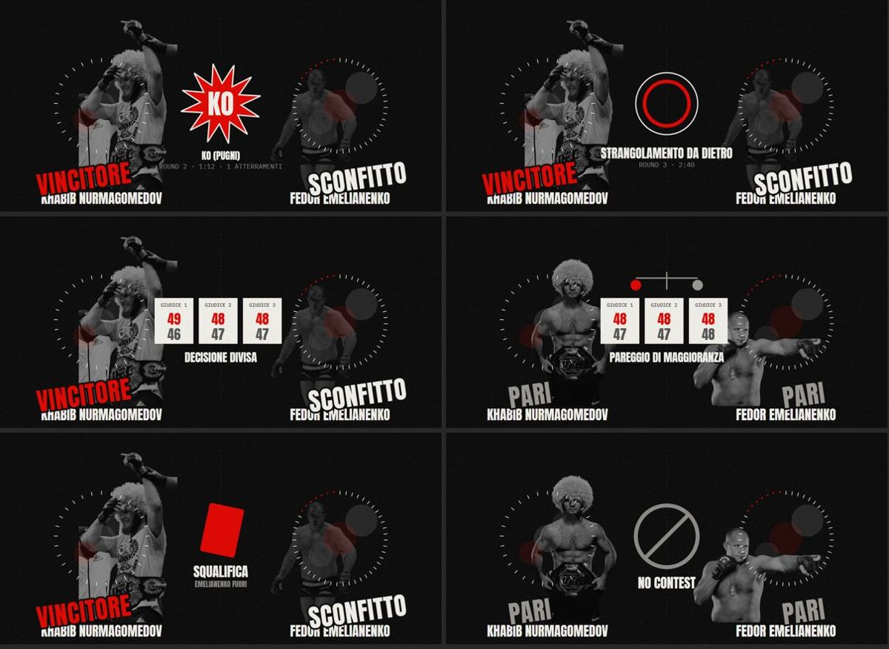
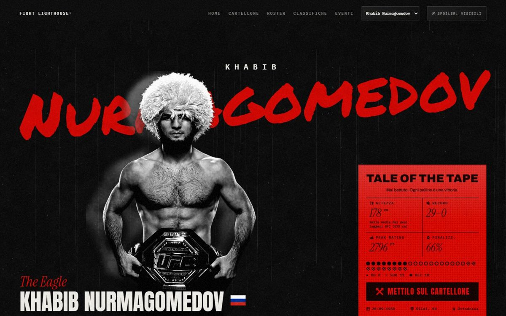
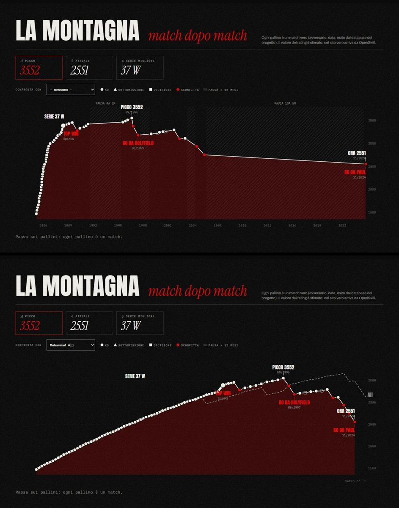
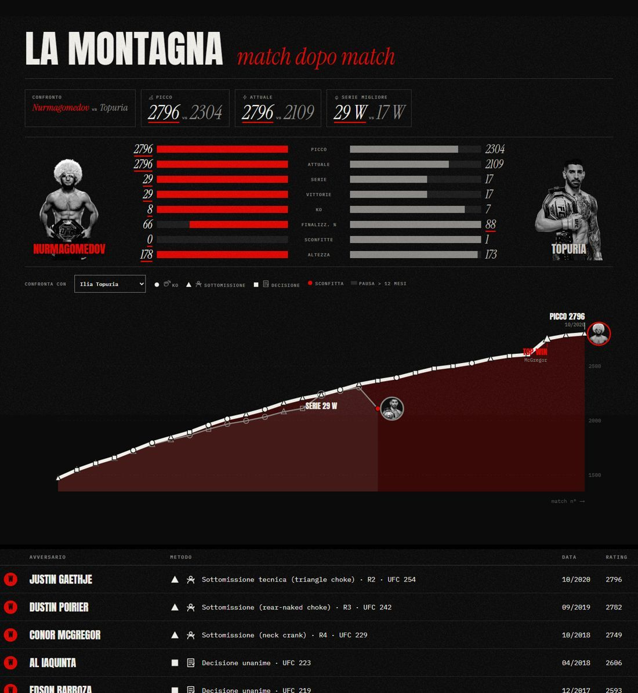
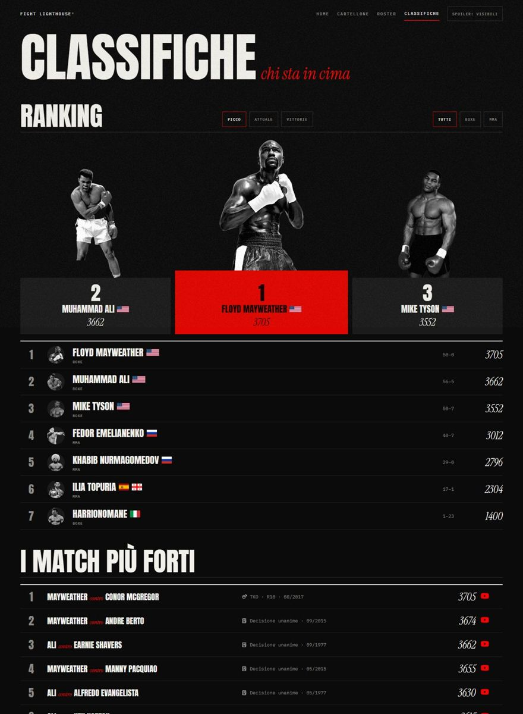